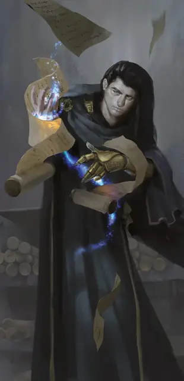

Маншун
Manshoon
Средний Гуманоид (Человек), законно-злой, именной НИП

Класс Доспеха 19 (мантия архимага, посох силы)
Хиты 126 (23к8 + 23)
Скорость 30 футов
| мод | спас | ||
|---|---|---|---|
| СИЛ | 10 | +0 | +2 |
| ЛОВ | 14 | +2 | +4 |
| ТЕЛ | 12 | +1 | +3 |
| мод | спас | ||
|---|---|---|---|
| ИНТ | 23 | +6 | +13 |
| МДР | 15 | +2 | +9 |
| ХАР | 16 | +3 | +5 |
Навыки История +11, Магия +11
Чувства тёмное зрение 60 футов, пассивное Восприятие 12
Языки Общий, Гоблинский, Драконий, Инфернальный, Орочий, Подземный
Опасность 13 (10000 опыта)
Бонус мастерства +5
Особенности
Особое снаряжение. Маншун облачён в мантию архимага [robe of the archmagi] и орудует посохом силы [staff of power] (оба учтены в статблоке). Бросьте 2к10 чтобы определить кол-во зарядов в посохе.
Сопротивление магии. Маншун совершает с преимуществом спасброски от заклинаний и прочих магических эффектов.
Использование заклинаний. Маншун является заклинателем 18-го уровня. Его базовой характеристикой является Интеллект (Сл спасброска от заклинания 21, +15 к попаданию атаками заклинаниями). У него подготовлены следующие заклинания волшебника:
• Заговоры (неограниченно): волшебная рука [mage hand], огненный снаряд [fire bolt], свет [light], фокусы [prestidigitation], электрошок [shocking grasp].
• 1 уровень (4 ячейки): волшебная стрела [magic missile], доспехи мага [mage armor], обнаружение магии [detect magic], щит [shield].
• 2 уровень (3 ячейки): обнаружение мыслей [detect thoughts], отражения [mirror image], туманный шаг [misty step].
• 3 уровень (3 ячейки): контрзаклинание [counterspell], молния [lightning bolt], послание [sending].
• 4 уровень (3 ячейки): огненный щит [fire shield], высшая невидимость [greater invisibility], превращение [polymorph].
• 5 уровень (3 ячейки): длань Бигби [bigby's hand], наблюдение [scrying], силовая стена [wall of force].
• 6 уровень (1 ячейка): сфера неуязвимости [globe of invulnerability], окаменение [flesh to stone].
• 7 уровень (1 ячейка): перст смерти [finger of death], подобие [simulacrum].
• 8 уровень (1 ячейка): сокрытие разума [mind blank], слабоумие [feeblemind].
• 9 уровень (1 ячейка): слово силы: смерть [power word kill], заточение [imprisonment].
Действия
Металлический кулак. Рукопашная атака оружием: +6 к попаданию, досягаемость 5 футов, одна цель. Попадание: 4 (1к4 + 2) дробящего урона.
Посох силы. Рукопашная атака оружием: +7 к попаданию, досягаемость 5 футов, одна цель. Попадание: 5 (1к6 + 2) дробящего урона или 6 (1к8 + 2) дробящего урона, если используется для атаки двумя руками. При попадании Маншун может по тратить 1 заряд посоха, чтобы дополнительно нанести 3 (1к6) урона силовым полем.
Описание
В этом приключении «Маншуном» назван клон этого древнего архимага. Он проник в Глубоководье много лет назад и с тех пор скрывался в Башнях Колатов в Южном районе.
Изначальный Маншун был одним из основателей Жентарим. У этого злодея были враги по всему Фаэруну, среди них — могущественные заклинатели вроде Келбена Эрансана и Эльминстера. Опасаясь, что враги его погубят, Маншун создал себе несколько магических клонов. Но из-за сбоя все они ожили одновременно и попытались истребить друг друга — эти конфликты называют Войнами Маншунов.
Теперь изначальный Маншун погиб, и большинство считает, что его клоны тоже уничтожены. На самом деле живы как минимум трое. Тот, что сейчас в Глубоководье, избежал гибели, скрывшись в Подгорье, но случайно наткнулся там на Халастера. Тот одолел Маншуна в магической дуэли, пленил его и ампутировал левую руку по локоть — никто не знает зачем. Маншун сбежал из плена и ушёл из Подгорья в город на поверхности. Он не сумел магически регенерировать отрубленную руку, так что ему пришлось сделать протез.
Маншун захватил Башни Колатов — заброшенное жилище в Южном районе, которое много лет назад воздвигли для себя два волшебника. Здание окружено магическим барьером со свойствами силовой стены [wall of force]. Маншун редко покидает башни, а если приходится, то делает это с помощью круга телепортации [teleportation circle], поэтому никто не видел, как он входит или выходит.
Маншун жаждет править Глубоководьем и заменить Городскую стражу наёмниками Чёрной Сети, верными ему одному. Подкупая и шантажируя Лордов в масках, он намерен убрать Лейраль Сильверхенд с должности и занять её место, убить Чёрного Посоха, превратить Лордов в масках в своих вассалов и объявить себя королём-волшебником Глубоководья. Захватив город, Маншун намерен заняться Подгорьем, покончить с Халастером навсегда и завладеть богатствами подземелья.
Подобие Маншуна
С помощью заклинания подобие [simulacrum] Маншун при необходимости создаёт себе магического двойника. Он доработал заклинание и повысил хиты двойника, пожертвовав для этого его возможностью накладывать заклинания.
Одновременно у Маншуна может быть только один двойник, которого он использует, чтобы передавать приказы агентам Жентарим. Если двойника уничтожают, то Маншун создаёт нового. У каждого двойника характеристики Маншуна со следующими особенностями:
- У двойника нет особого снаряжения. Поэтому его КД 12, нет особенности Сопротивление магии и действия Посох силы.
- Он теряет все ячейки заклинаний 6-го уровня и выше.
- Его показатель опасности 8 (3 900 опыта).